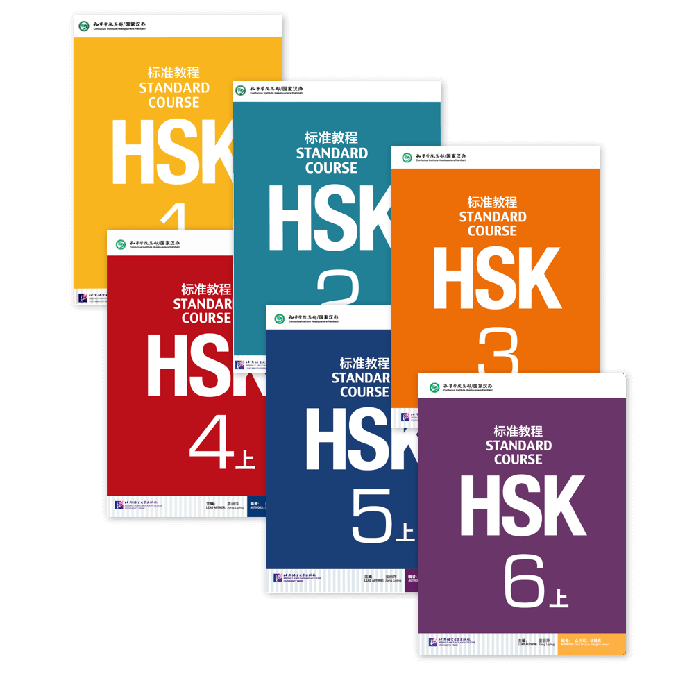

Best Resources to Learn Chinese
Find a Good Step-by-Step Book or Resource
There are a lot of resources on the Internet that you can find. A good start can be the book called "HSK Standard Course". HSK stands for 汉语水平考试，where 汉语*(hànyǔ) means Chinese, 水平(shuǐpíng) means level, and 考试(kǎoshì) means exam. Basically HSK is an international exam so you can have proof that you actually know Chinese. It's similar to the TOEFL or CAE in English. Remember you will start learning Pinyin which is the romanization system for Chinese, that's how you learn how to pronounce words and pronunciation in Chinese is really really important. HSK Standard Course 1 is a good start.
Review Vocabulary Every Day
The second step is key. Whatever you learn, it is normal that you
forget. Think about when you studied for an exam, do you still
remember? Well, it is because when we studied for an exam, most of
us studied to pass it and then we didn't have the need to review it.
My recommendation here it's to start using a spaced repetition
software, the best one for me is Anki. Spaced repetition is a
technique for fast and long-lasting memorization, that's what we
need when studying Chinese! Please take a look at
Anki's website.
Try it, it helps a lot and not only for Chinese! It's basically for
remembering information.
Find a Speaking Partner
Everything you've learned so far needs to be applied. How do you
apply it? Using it! Try and find someone you can write and speak
Chinese. There is an app called HelloTalk, you can download it to
your cellphone and exchange your language, you can help Chinese
people with your English or Spanish, and they will help you out with
your Chinese.
There is also another app I've heard which is Tandem, you can also
try it. I've heard it's pretty good!
Regular Chinese Classes
It's a really hard task to study by yourself. You know yourself, and if you feel that you won't do it. Don't hesitate on looking for regular Chinese classes and you can do everything from the above as an additional resource for your studies.